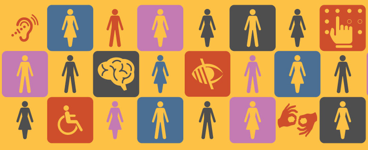

Inclusive Designing Principles
Designing interfaces for users with diverse abilities.
Inclusive design definition
Divers users needs
Disability types
Economics accessibility
Financial SEO, and legal benefits of accessible design.
Benefits
Crisis
Socio-economics

Assistive Web Tools
Screen readers, magnifiers, and keyboard navigation.